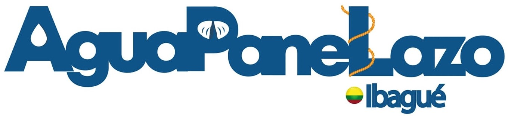
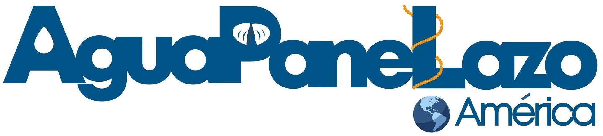

Aguapanelazo
El Aguapanelazo nació en la ciudad de Ibagué el 7 de marzo de 2014 y hoy hace presencia misionera en 11 ciudades de Colombia y en tres países de Latinoamérica: Argentina, Paraguay y México. Muchas de las personas que participan en el Aguapanelazo son cristianas y otras no lo son, por eso el aguapanelazo es misión incluyente, porque permite el encuentro de cristianos y no cristianos en una frontera existencial concreta de nuestra ciudad, porque lleva jóvenes desvinculados de la vida eclesial y sacramental al encuentro con Jesús, en medio de los pobres que viven en las calles, barrios y realidades de la ciudad.
Uno de los aguapanelazo es el de Ibagué, el que le dio origen a esta hermosa misión, por la necesidad de los habitante o amigos con condición de calle, donde el punto de encuentro para el inicio de esta actividad es todos los jueves en la catedral a las 7 de la noche, sin importar las condiciones del clima siempre se realiza pensando en ellos, por aquel que no solo necesita de un alimento, sino, de aquel que necesita ser escuchado, en el aguapanelazo Ibagué antes de empezar nuestro recorrido que es por toda la tercera hasta la estatua de la cacica dulima, luego nos dirigimos a la plaza de la 21, luego por todo la primera hasta el parque Galarza, hay es donde se culmina el recorrido, a los colaboradores que son todos aquellos que ayudan, ya sea de manera presencial, monetaria o donando: pan, panela o vasos, se les explica sobre el aguapanelazo, y el trato con los habitantes de calle, recordando que ellos también son seres humanos que necesitan el respeto adecuado, que si ellos quieren hablar con nosotros, los escuchemos, les hablemos y si se les puede ayudar ayudarlos, ya que por circunstancias de la vida ellos están en esa situación y con los colaboradores entablar una relación cómoda para que continúen en este proceso, ya a veces son niños, jóvenes, padres de familia, estudiantes, entre otras que ayudan y participan del aguapanelazo, existe un cantico, que se realiza por el recorrido donde se les advierte a los habitantes de calles que ya estamos hay.
Cantico:
Aguapanela con pan x3,
Ellos no son de la calle son nuestros x2
Aguapanela con pan x2,
Ellos no son de la calle son nuestros x2
Aguapanela con pan pan pan pan pan
Aguapanela con pan hay x2
Para más información visita la pagina web:
https://www.aguapanelazo.com/
También puede encontrarlos por Facebook como:

y/o

Enlaces de referencias.